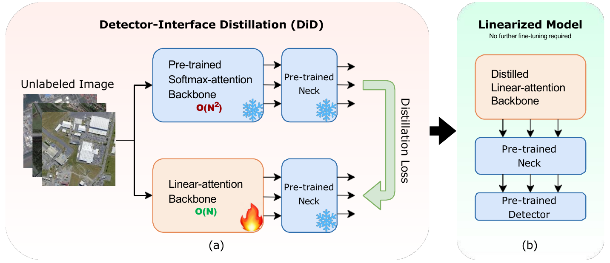
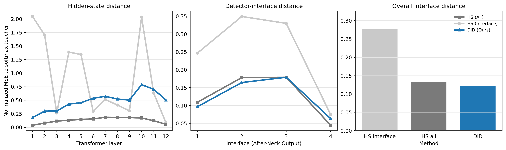
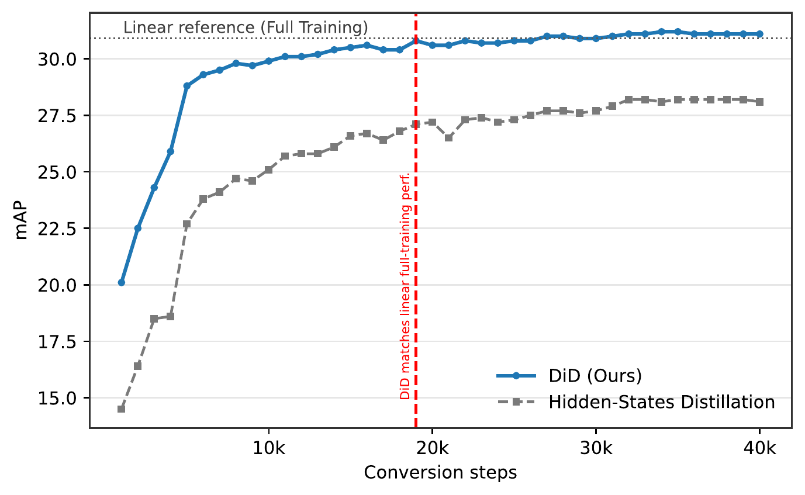
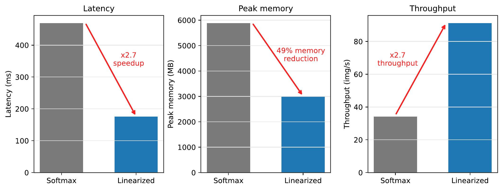

While linear attention is a compelling mechanism for high-resolution object detection due to its reduced cost for global token mixing, converting the Softmax-attention ViT backbone of a trained detector into a linear-attention one is not a trivial drop-in replacement. Directly swapping the attention operator leads to severe performance degradation, and generic label-free distillation, though effective for classification, often fails on detection tasks. We argue that the central challenge is detector-interface preservation: the converted backbone must reproduce the exact feature tensors expected by the fixed downstream detector, rather than merely imitating internal Softmax hidden states. To address this, we introduce Detector-Interface Distillation (DiD), a label-free conversion method that exclusively trains the linear-attention backbone by aligning detector-facing interface tensors with those of a frozen Softmax teacher. On DOTA-v1.5, DiD substantially outperforms established baselines and matches supervised, fully trained linear models. Adaptation completes in roughly 87 minutes on 4 GPUs, and the linearized backbone cuts inference latency by ∼62% and peak memory by ∼49%. We hope our findings offer the community a simple, label-free route to reusing trained Softmax detectors as efficient linear ones, and encourage interface-aware objectives in future architecture-conversion work.
Label-Free Softmax-to-Linear Conversion. Rather than retraining the full detector, we replace the quadratic attention modules in the backbone of a trained ViT detector with linear attention and perform a short label-free adaptation stage that trains only the backbone, as illustrated in Figure 1. The difficulty is that the converted backbone must remain compatible with a detector pipeline that was trained around the original Softmax feature distribution.
Overview. Detector-Interface Distillation (DiD) adapts a linear-attention student backbone to a detector that was originally trained with a Softmax-attention backbone. DiD aligns the multi-scale tensors produced at the output of the neck/FPN, while updating only the student backbone. Softmax and linear attention implement different token-mixing rules, so their intermediate hidden states need not follow identical trajectories. DiD instead preserves the feature boundary on which the fixed detector depends. Algorithm 1 summarizes this computation in pseudocode.
# B_t: frozen Softmax teacher backbone# B_s: trainable linear-attention student# N_t, N_s: identical frozen neck/FPN copies# H: frozen detector heads (unused in loss)# beta: weights, beta[i] for interface m = i+1B_s.params = B_t.params # copy compatible weightsfor x in unlabeled_images: # no detection labels R_t = B_t.readout_features(x) # frozen path R_s = B_s.readout_features(x) # trainable Z_t = N_t(R_t) # tensors z_t^(1), ..., z_t^(M) Z_s = N_s(R_s) # tensors z_s^(1), ..., z_s^(M) # weighted detector-interface reconstruction loss = 0 for i in range(M): loss += beta[i]*mse(Z_s[i], Z_t[i].detach()) loss /= sum(beta) loss.backward() # update only student backbone update(B_s) # AdamW step# deploy: drop teacher, reuse the frozen detectorconverted_detector = H o N_s o B_s
Weighted Interface Objective. DiD aligns corresponding teacher and student interface tensors using the weighted reconstruction objective
where βm > 0 controls the contribution of interface output m.
Conversion and Deployment. After conversion, the teacher branch is discarded. The converted detector reuses the original neck/FPN and prediction modules without additional fine-tuning.
To test whether a classification-oriented transfer objective is sufficient for object detection, we compare direct copy and generic LightlyTrain-style global-feature distillation on ImageNet and CIFAR-100 classification, and on DOTA-v1.5 detection with RetinaNet.
| Classification | Detection | |||||
|---|---|---|---|---|---|---|
| Method | ImageNet | CIFAR-100 | DOTA-v1.5 | |||
| Acc. | Retained (%) | Acc. | Retained (%) | mAP | Retained (%) | |
| Softmax reference | 79.83 | 100.0 | 78.09 | 100.0 | 33.5 | 100.0 |
| Direct copy | 5.08 | 6.4 | 3.54 | 4.5 | 1.7 | 5.1 |
| Generic distillation | 77.83 | 97.5 | 75.92 | 97.2 | 18.1 | 54.0 |
Direct copy collapses across all three tasks (Table 1), confirming that the attention operator cannot be replaced without adaptation. Generic distillation, however, exhibits a clear task gap: it retains 97.5% and 97.2% of the Softmax-reference accuracy on ImageNet and CIFAR-100, respectively, but only 54.0% of the reference mAP on DOTA-v1.5.
| Supervision target | mAP | mAP50 | mAP75 |
|---|---|---|---|
| Attention outputs | 7.8 | 17.4 | 5.6 |
| Hidden states from all layers | 25.2 | 44.7 | 24.6 |
| Hidden states from readout layers | 20.3 | 37.4 | 19.0 |
| Final hidden state | 12.6 | 24.1 | 11.7 |
| Post-neck/FPN detector features | 30.7 | 54.1 | 30.1 |
We ask where supervision should be applied so that the converted backbone remains compatible with the fixed detector.
As shown in Table 2, matching all transformer hidden states is the strongest detector-agnostic target, but it remains 5.5 mAP below supervision after the neck/FPN. Matching only the backbone layers supplied to the neck is also insufficient.
Experimental Setup. We evaluate label-free detector conversion on DOTA-v1.5, a high-resolution aerial-detection benchmark where global token mixing is costly and small objects are common. We use RetinaNet and Faster R-CNN with a ViT-S backbone. We evaluate two linear-attention feature maps: φ(x) = ReLU(x) following Han et al. (2024), and φ(x) = ELU(x) + 1 following Katharopoulos et al. (2020).
Baselines. We compare DiD with four label-free alternatives and one supervised reference. Direct copy replaces the attention operator and evaluates the copied parameters without adaptation. Generic distillation uses LightlyTrain to align global teacher-student representations. Softmax-generated pseudo-label distillation uses AutoDistill to train the student from the frozen teacher’s predicted detections. Hidden-state distillation follows RADLADS-style intermediate representation matching across transformer layers. Full training trains the corresponding linear-attention detector using detection labels and is included only as a supervised reference.
| Detector | Method | ReLU | ELU | ||||
|---|---|---|---|---|---|---|---|
| mAP | mAP50 | mAP75 | mAP | mAP50 | mAP75 | ||
| RetinaNet | Softmax reference | 33.5 | 58.1 | 33.2 | 33.5 | 58.1 | 33.2 |
| Full training | 30.9 | 53.3 | 30.9 | 30.8 | 53.0 | 31.3 | |
| Direct copy | 1.7 | 3.8 | 1.2 | 1.3 | 2.9 | 0.9 | |
| Generic distillation | 18.1 | 35.2 | 16.6 | 9.6 | 19.2 | 5.3 | |
| Softmax-generated pseudo-label distillation | 14.8 | 33.6 | 10.1 | 19.6 | 38.2 | 17.2 | |
| Hidden-state distillation | 28.1 | 49.7 | 27.7 | 26.7 | 47.4 | 26.6 | |
| DiD (Ours) | 31.1 | 54.5 | 31.0 | 31.1 | 54.4 | 30.7 | |
| Faster R-CNN | Softmax reference | 33.1 | 56.0 | 34.1 | 33.1 | 56.0 | 34.1 |
| Full training | 28.9 | 50.0 | 29.1 | 28.6 | 50.0 | 28.6 | |
| Direct copy | 0.3 | 0.7 | 0.2 | 0.2 | 0.4 | 0.1 | |
| Generic distillation | 14.9 | 30.8 | 12.9 | 8.9 | 19.3 | 7.1 | |
| Softmax-generated pseudo-label distillation | 25.7 | 46.2 | 25.3 | 25.4 | 46.1 | 24.9 | |
| Hidden-state distillation | 27.1 | 48.1 | 26.9 | 27.2 | 48.1 | 26.6 | |
| DiD (Ours) | 29.3 | 51.1 | 29.8 | 28.9 | 50.2 | 29.4 | |
Table 3 establishes three consistent trends: Firstly, direct copy produces near-zero mAP for both attention kernels and detector families. Secondly, generic representation matching and pseudo-label supervision recover only part of the lost detector performance. Thirdly, DiD is the strongest label-free method. Its performance is also comparable to the supervised linear-attention references.
To understand why DiD outperforms hidden-state distillation, we compare how the two objectives affect teacher-student alignment inside the backbone and at the detector-facing interface. Figure 2(a) compares the normalized feature error at internal backbone states and detector-facing tensors.


All-layer hidden-state distillation achieves lower mismatch within the transformer, whereas DiD achieves lower mismatch at the detector-facing interface and higher detector accuracy.
Figure 2(b) shows that DiD maintains an advantage over hidden-state distillation throughout conversion and reaches the supervised linear-training regime after approximately 20k-30k steps.
Figure 3 compares backbone-only inference for Softmax attention and the ReLU-linearized ViT. The linearized backbone reduces average latency by approximately 62% and peak memory by approximately 49%.

@article{qin2026did,
title = {DiD It in 87 Minutes: A Label-Free Softmax-to-Linear
Adaptation of Vision Transformers for Object Detection},
author = {Qin, Huaiyuan and Goenawan, Gabriel James and Lin, Zihang and
Yang, Muli and Zhu, Hongyuan},
journal = {arXiv preprint arXiv:2608.22368},
year = {2026}
}This page is adapted from the ECHO project page, itself built on the Nerfies template.